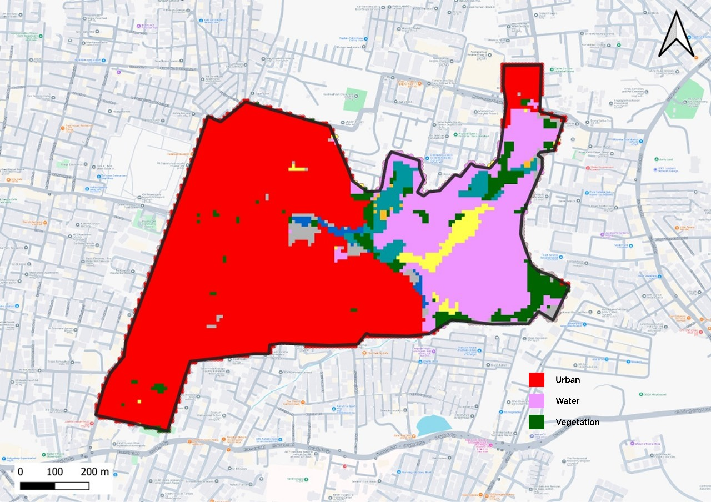
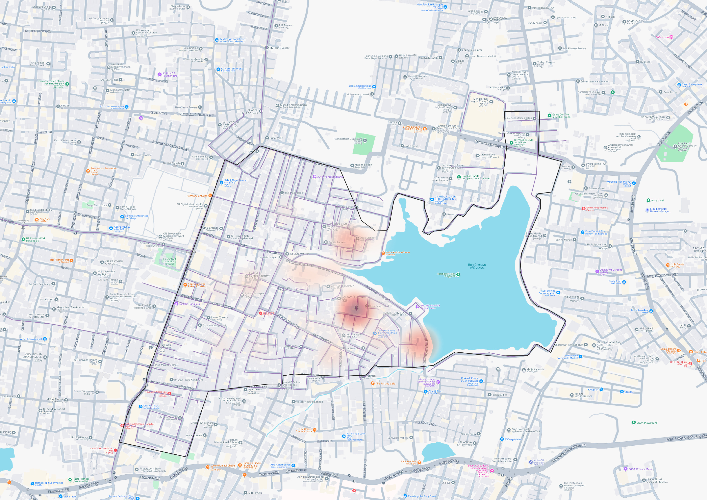

Ward META Data
726,916.26
Total Area (sq m)
82,350.66
Slum Area (sq m)
178,908.15
Waterbody (sq m)
2,273.81
Perimeter (m)
20
Hotspots
15
Robots
Ward Analysis
726,916.26
Total Area (sq m)
82,350.66
Slum Area (sq m)
178,908.15
Waterbody (sq m)
2,273.81
Perimeter (m)
20
Hotspots
15
Robots
Land Use Mix
Manhole Condition
Sewer Length by Area
Waste by Blockage
Junction Type Share
Clogging Share
Robots by Area
Hotspot Share
Ward Operation

Landuse

Sewage Network

Surface

Hotspot
The Hotspot analysis revealed a clear Concentration around the lake , Primarily driven by high impervious Surface Coverage, slope-induced runoff patterns, and Surrounding land use pressures.
Top Manholes by Clog Incidents
| Manhole ID | Condition | Incidents |
|---|---|---|
| MH-0016 | Good | 8 |
| MH-0049 | Good | 8 |
| MH-0025 | Good | 8 |
| MH-0024 | Fair | 8 |
| MH-0044 | Fair | 8 |
Sewer Areas: Length & Robots
| Area Type | Length (km) | Robots |
|---|---|---|
| Residential | 12.93 | 10 |
| Slum | 12.87 | 10 |
| Waterbody | 16.23 | 10 |
| Residential | 11.84 | 10 |
| Slum | 17.55 | 10 |
5.97
Avg Waste (kg)
22.79
Avg Time (mins)